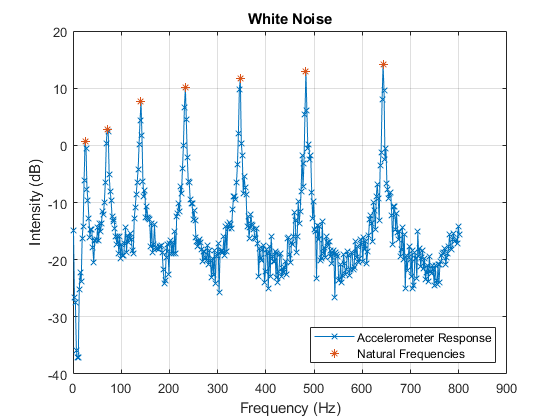
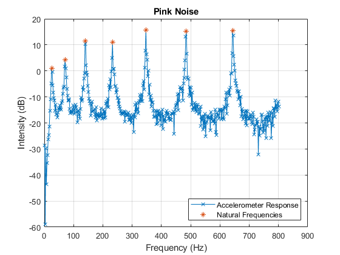
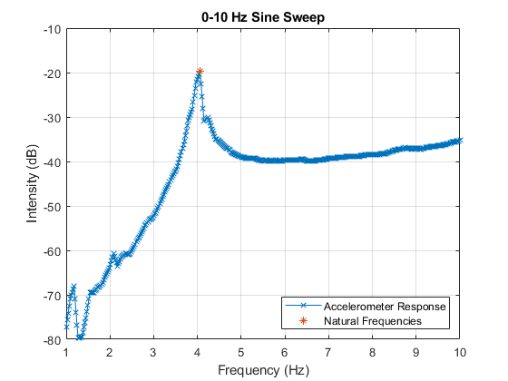
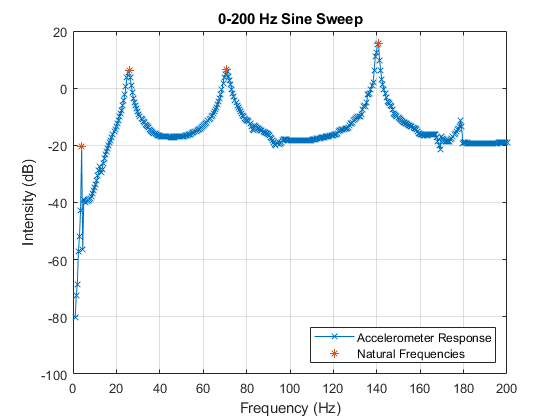

Solids Lab: Vibrations
Trevor Burgoyne 7 Dec 2022 AEM 4602W, Lab Group 3Bi
Contents
Beam Properties
l = 43.375; % in, length w = 1.002; % in, width t = 0.264; % in, thickness x_accel = 0.386; % in, distance from tip to accelerometer d = l - x_accel; % in, distance from accel to shaker A = w*t; % in^2, cross-sectional area % rhoMetric2rhoImperial = 0.00112287; % g/cm^3 -> slug/in^3 % rho = 2.7*rhoMetric2rhoImperial; % g/cm^3 -> slug/in^3, density rho = 0.0975; % lb/in^3 E = 10e6; % psi, Elastic Modulus I = (w*t^3)/12; % in^4, moment of inertia of the beam cross-section g = 3.86; % gravitational acceleration
Theory
kn = [3.52, 22, 61.7, 121, 200];
theory_wns = round((kn/2*pi)*sqrt((E*I*g)/(rho*A*l^4))*100)/100 % Hz, natural frequencies
theory_wns =
4.4600 27.8500 78.1100 153.1900 253.2100
White Noise
whiteNoise = struct(); whiteNoise.data = readtable('./Vibrations/whiteNoise-20samples.csv'); % HZ, DB figure() plot(whiteNoise.data.HZ, whiteNoise.data.DB, '-x', 'DisplayName', 'Accelerometer Response'); grid on; [pks, locs] = findpeaks(whiteNoise.data.DB); idxs = find(pks > 0.3); whiteNoise.wns = whiteNoise.data.HZ(locs(idxs))' % Hz, frequencies of the peaks hold on; plot(whiteNoise.wns, pks(idxs), '*', 'DisplayName', 'Natural Frequencies') xlabel('Frequency (Hz)');ylabel('Intensity (dB)');title('White Noise'); legend('location', 'southeast')
whiteNoise =
struct with fields:
data: [401×2 table]
wns: [25 71 141 233 347 483 643]
 Pink Noise
pinkNoise = struct(); pinkNoise.data = readtable('./Vibrations/pinkNoise.csv'); % HZ, DB figure() plot(pinkNoise.data.HZ, pinkNoise.data.DB, '-x', 'DisplayName', 'Accelerometer Response'); grid on; [pks, locs] = findpeaks(pinkNoise.data.DB); idxs = find(pks > 0.3); pinkNoise.wns = pinkNoise.data.HZ(locs(idxs))' % Hz, frequencies of the peaks hold on; plot(pinkNoise.wns, pks(idxs), '*', 'DisplayName', 'Natural Frequencies') xlabel('Frequency (Hz)');ylabel('Intensity (dB)');title('Pink Noise'); legend('location', 'southeast')
pinkNoise =
struct with fields:
data: [401×2 table]
wns: [25 71 141 233 347 485 643]
 0-10 Hz Sine Sweep
sweep10 = struct(); sweep10.data = readtable('./Vibrations/SineSweep10Hz.csv'); % HZ, DB figure() plot(sweep10.data.HZ, sweep10.data.DB, '-x', 'DisplayName', 'Accelerometer Response'); grid on; [pks, locs] = findpeaks(sweep10.data.DB); idxs = find(pks > -20); sweep10.wns = sweep10.data.HZ(locs(idxs))' % Hz, frequencies of the peaks hold on; plot(sweep10.wns, pks(idxs), '*', 'DisplayName', 'Natural Frequencies') xlabel('Frequency (Hz)');ylabel('Intensity (dB)');title('0-10 Hz Sine Sweep'); legend('location', 'southeast')
sweep10 =
struct with fields:
data: [401×2 table]
wns: 4.0600
 0-200 Hz Sine Sweep
sweep200 = struct(); sweep200.data = readtable('./Vibrations/SineSweep200Hz.csv'); % HZ, DB figure() plot(sweep200.data.HZ, sweep200.data.DB, '-x', 'DisplayName', 'Accelerometer Response'); grid on; [pks, locs] = findpeaks(sweep200.data.DB); idxs = 1; % Keep first peak as well, even though it's smaller idxs = [idxs, find(pks > 0)']; sweep200.wns = sweep200.data.HZ(locs(idxs))' % Hz, frequencies of the peaks hold on; plot(sweep200.wns, pks(idxs), '*', 'DisplayName', 'Natural Frequencies') xlabel('Frequency (Hz)');ylabel('Intensity (dB)');title('0-200 Hz Sine Sweep'); legend('location', 'southeast')
sweep200 =
struct with fields:
data: [401×2 table]
wns: [3.9850 25.8700 70.6500 140.8000]
 First Five Natural Frequencies
wns = [
mean([sweep10.wns(1), sweep200.wns(1)]),...
mean([sweep200.wns(2), whiteNoise.wns(1), pinkNoise.wns(1)]),...
mean([sweep200.wns(3), whiteNoise.wns(2), pinkNoise.wns(2)]),...
mean([sweep200.wns(4), whiteNoise.wns(3), pinkNoise.wns(3)]),...
mean([whiteNoise.wns(4), pinkNoise.wns(4)])...
]
wns =
4.0225 25.2900 70.8833 140.9333 233.0000